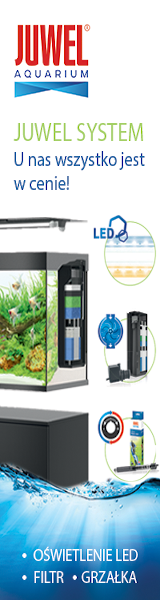

Nano akwarium
Microrasbora Galaxy
Neon Błękitny
Kirysek Sierpoplamy
Dropniczka
Zwinnik Jarzeniec
Microrasbora Galaxy
Ryba pochodzi z Południowo wschodniej Birmy, a sam gatunek jest stosunkowo niedawno odkryty (w 2006 roku).
Rybki osiągają niewielkie rozmiary - zwykle do 2,1cm długości. Rozróżnienie płci u ryb jest bardzo łatwe.
Samice galaxy są nieznanie większe od samców i posiadają bardziej zaokrąglony brzuch.
Wymaga zbiornika o pojemności minimum 30 litrów. Podłoże piaszczyste lub żwirowate.
Akwarium powinno być jasno oświetlone. Dekoracje z roślin, kawałków drewna i korzeni.
Ryby najlepiej prezentują się wśród roślin o drobnych liściach i soczysto zielonej barwie.
Wymagania odnośnie wody: pH 7,0-7,5 ; twardość ogólna8-12°dGH. Woda musi być bardzo dobrze filtrowana lecz bez dużego prądu wody.
Gatunek łatwo przystosowuje się do parametrów wody, ale jest wrażliwy na jej zły stan.
